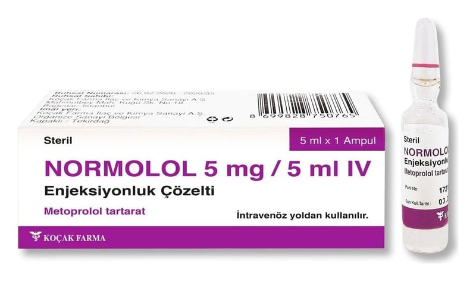

Normolol 5 mg/5 ml IV Enjeksiyonluk Çözelti, 1 Adet

Ne için kullanılır
KT · Bölüm 1NORMOLOL içerisinde metoprol ol tartarat vardır. Her bir kutu, renksiz, şeffaf 1 adet 5 ml’lik cam ampul içermektedir. Metoprol ol beta bl okerler adı verile n bir sını fa dahildir ve bi r be ta-1- selekt if be ta bl okeridi r. Metoprol ol ile teda vi kalpte bulunan beta-1- reseptör leri üz erindeki stres hor monlarının etki sini azaltmakt adır. Kalp atımlarının yavaşlamasına , kalpt e
ritim bozukluklarının önlenmesine ve teda vi sine , aynı zamanda tansiyonun düşürül mesine yol açar. NORMOLOL aşağıda belir tilen teda vilerde k ullanılmakt adır: • Kalp ritmi bozukluklarının önlenmesi ve t eda vi sinde • Kalp krizi t eda vi sinde